오늘 끌리는 걸 찾아볼까?
전체 콘텐츠

내 연애 열차 운행 타입은?
한 화면씩 답하면서 알아보는 원핸드형 연애 성향 테스트입니다.
2분
직장인 회복력 체크
요즘 나의 번아웃 회복 탄력을 가볍게 점검해보는 심리 체크 테스트입니다.
2분
나만의 여행 성향 찾기
계획파인지 즉흥파인지, 여행에서 가장 편한 리듬을 알아보는 취향 테스트입니다.
2분
집중력 루틴 진단
집중이 잘되는 시간과 방식, 나에게 맞는 몰입 루틴을 찾는 자기관리 테스트입니다.
90초
친구 케미 점수 보기
친구 사이에서 내가 어떤 포지션인지, 어떤 케미가 잘 맞는지 보는 관계 테스트입니다.
1분
주말 충전 방식 찾기
밖순이인지 집순이인지, 주말마다 나를 가장 잘 살리는 회복 루틴을 찾는 테스트입니다.
1분썸 대화 온도 체크
메시지 텐션과 답장 스타일로 보는 나의 썸 대화 리듬 테스트입니다.
2분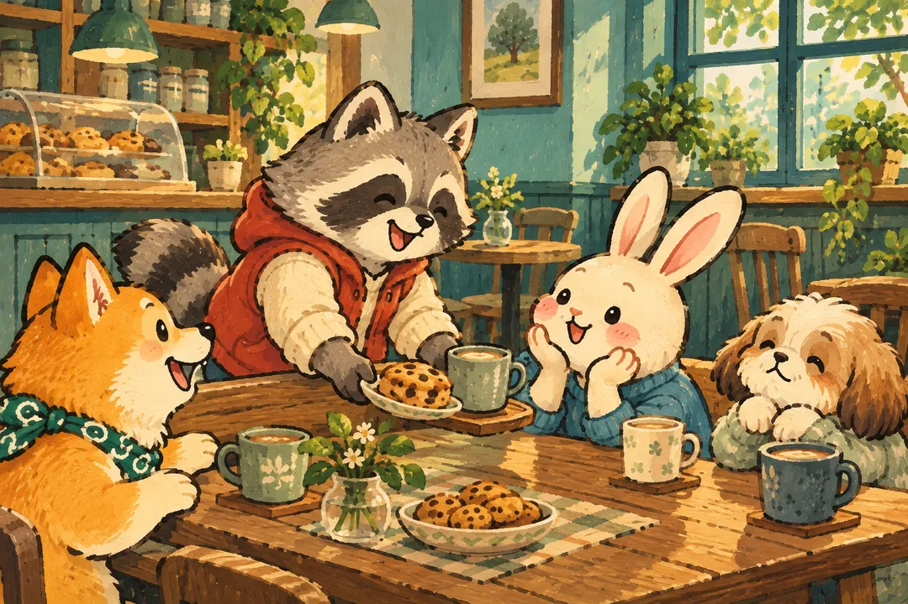
첫인상보다 오래가는 내 매력은?
처음보다 시간이 지날수록 더 크게 보이는 나의 매력 포인트를 알아보는 테스트입니다.
2분
결정을 내리는 순간의 나
직감파인지 분석파인지, 선택 앞에서 드러나는 내 결심 방식을 보는 테스트입니다.
2분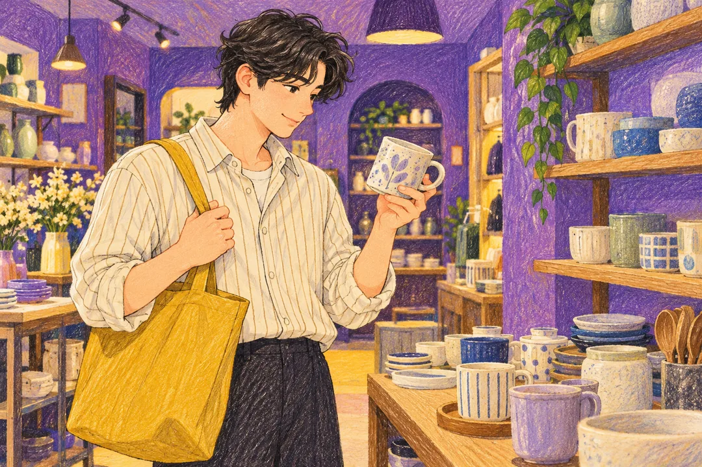
돈 쓸 때 드러나는 소비 타입
계획형인지 감정형인지, 결제 순간에 드러나는 내 소비 성향 테스트입니다.
2분
팀플에서 맡게 되는 역할
모임이나 협업에서 내가 자연스럽게 맡는 포지션을 알아보는 팀플 테스트입니다.
2분
쉬는 날 인간관계 충전법
혼자 쉬어야 풀리는지, 사람 만나야 살아나는지 보는 관계 충전 테스트입니다.
90초나의 플러팅 방식 찾기
직진형인지 은근형인지, 설렘이 생겼을 때 드러나는 나의 플러팅 방식 테스트입니다.
2분사진첩 무드로 보는 감성 타입
내 사진첩에 가장 많이 남는 장면으로 보는 감성 기록 스타일 테스트입니다.
2분
내 방이 말해주는 취향 무드
내가 편안함을 느끼는 공간 취향과 방 꾸미기 무드를 보는 테스트입니다.
2분
약속 잡을 때 드러나는 일정 성향
일정을 세세히 맞추는 편인지, 흐름대로 잡는 편인지 보는 약속 스타일 테스트입니다.
90초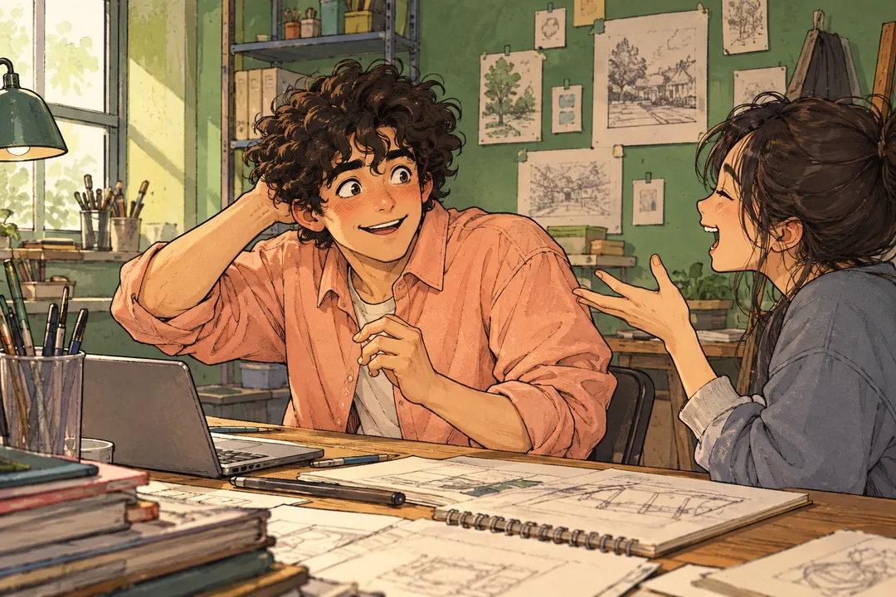
칭찬 들었을 때 반응 타입
칭찬 앞에서 수줍어지는지, 힘이 나는지, 장난으로 넘기는지 보는 반응 테스트입니다.
90초계절이 바뀌면 깨어나는 감성은?
계절 변화에 맞춰 더 크게 살아나는 나의 무드를 보는 감성 테스트입니다.
2분
스트레스 해소 버튼 찾기
움직이면 풀리는지, 말해야 풀리는지, 혼자 정리해야 풀리는지 보는 테스트입니다.
2분
소셜 배터리 사용법
사람 많은 자리에서 살아나는지, 깊은 대화에서 충전되는지 보는 소셜 배터리 테스트예요.
2분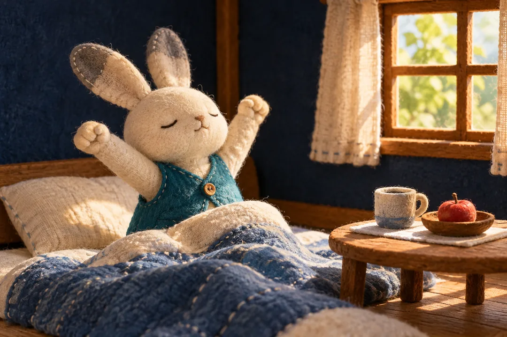
지금 내 에너지 레벨은?
다섯 가지 반응 중 지금의 나와 가장 가까운 것을 골라보는 컨디션 테스트예요.
2분오늘 끌리는 장면은?
설명보다 먼저 눈에 들어오는 장면으로 오늘의 감정 무드를 골라보는 테스트예요.
2분요즘 내 여유 잔량은?
일상 반응에 점수를 쌓아 요즘 마음의 여백이 얼마나 남았는지 보는 테스트예요.
2분AI와 일할 때 나는 어떤 파트너?
AI에게 일을 부탁하고 결과를 다듬는 6가지 상황으로 나의 협업 스타일을 찾아봐요.
90초
알림 OFF, 나의 오프라인 모드는?
소식을 잠깐 놓쳐도 괜찮은 시간, 화면 밖에서 내가 고르는 즐거움을 찾아봐요.
90초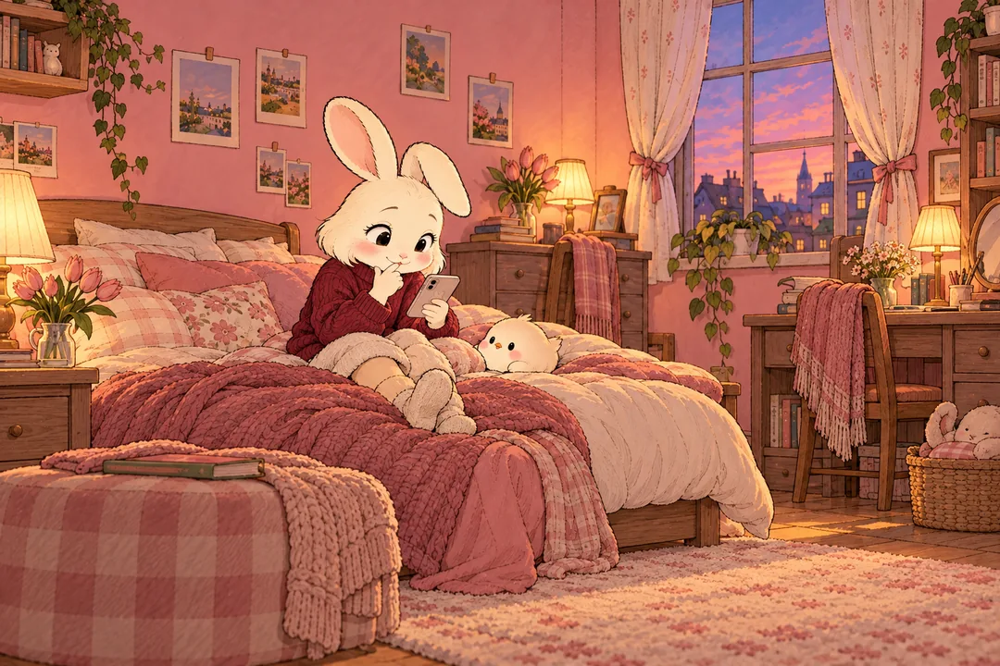
썸 탈 때 내 답장 온도는?
쿠쿠와 카톡하듯 답장을 고르면 내 대화 온도가 보여요.
2분대학생 미루기 습관 빙고
찔리는 칸을 눌러 오늘의 미루기 레벨을 완성해보세요.
1분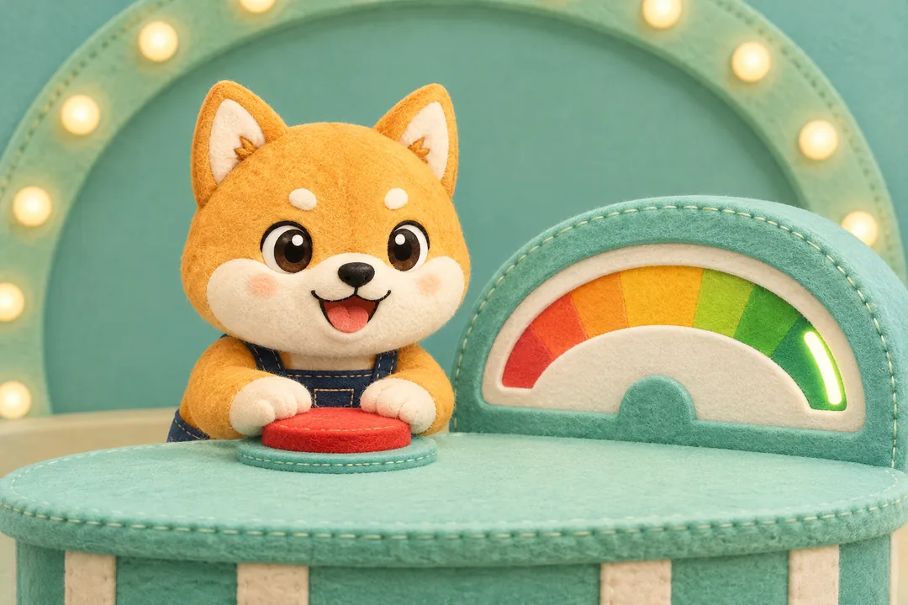
쿠쿠 배터리 100%에 멈추기
빠르게 차오르는 배터리를 100에 가장 가깝게 멈춰요.
30초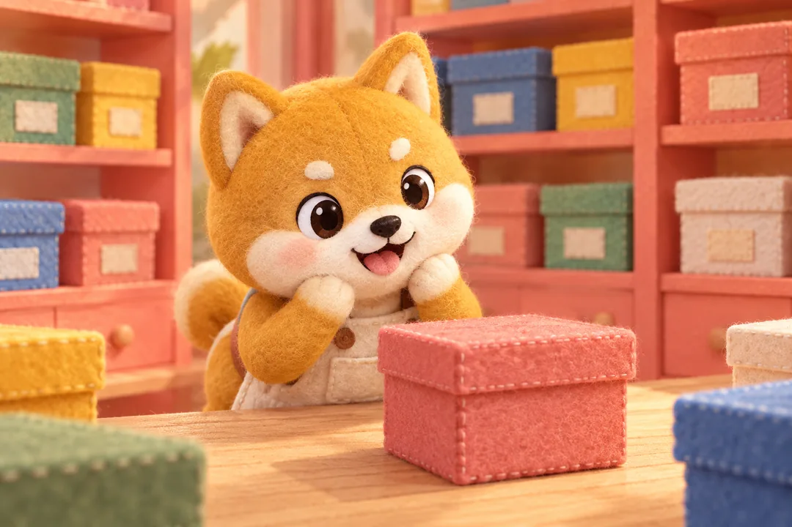
쿠쿠의 오늘 상자
상자 하나를 고르면 오늘의 작은 미션이 나와요.
20초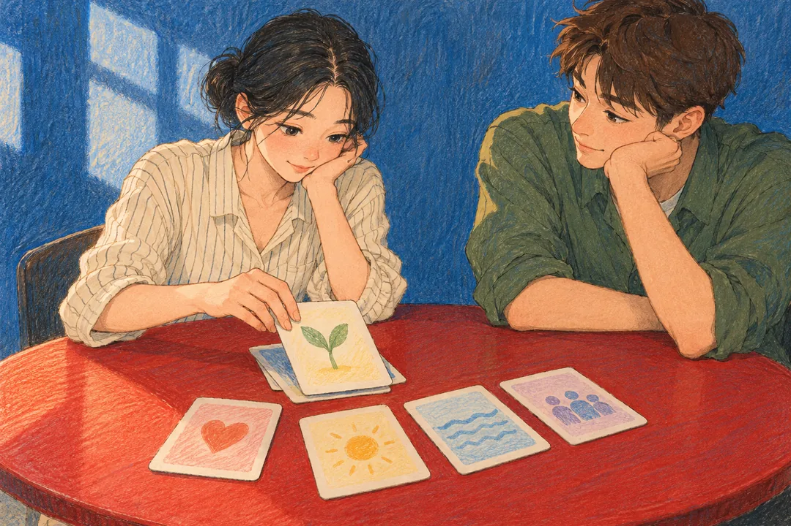
관계에서 포기 못 하는 것 순위
다섯 장을 옮겨 지금 가장 중요한 관계 기준을 골라요.
2분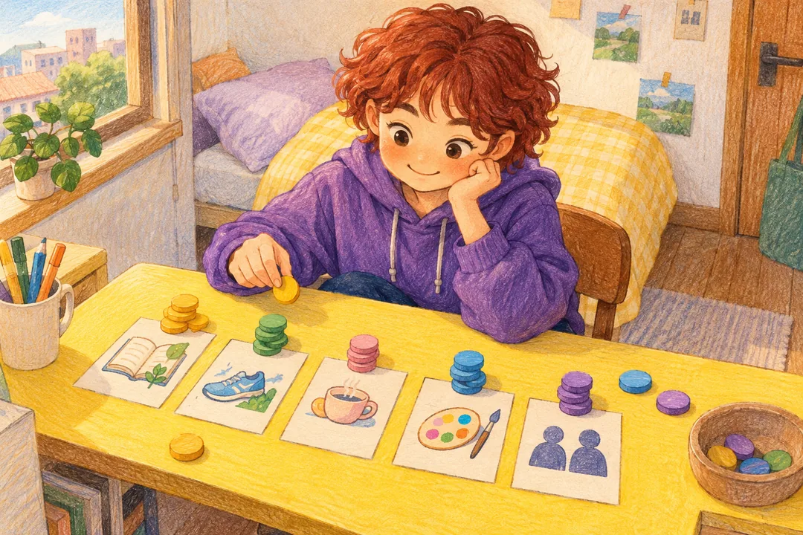
이번 주 에너지 100을 어디에 쓸까?
에너지 100을 나누면 지금 마음이 향한 곳이 보여요.
1분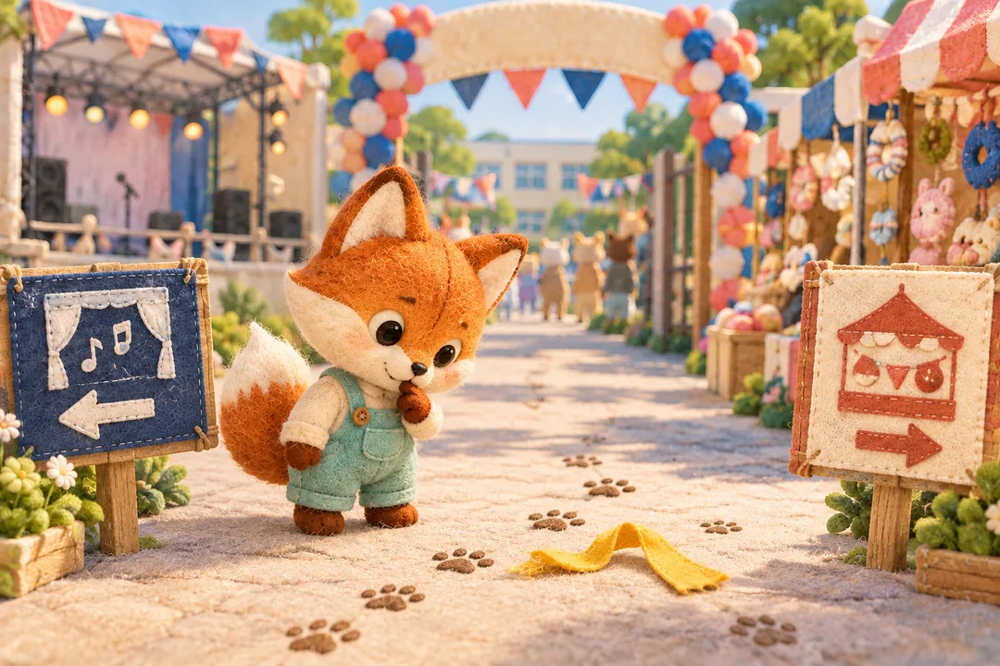
축제 날, 쿠쿠를 어디서 만날까?
고른 길에 따라 쿠쿠를 만나는 장소와 결말이 달라져요.
2분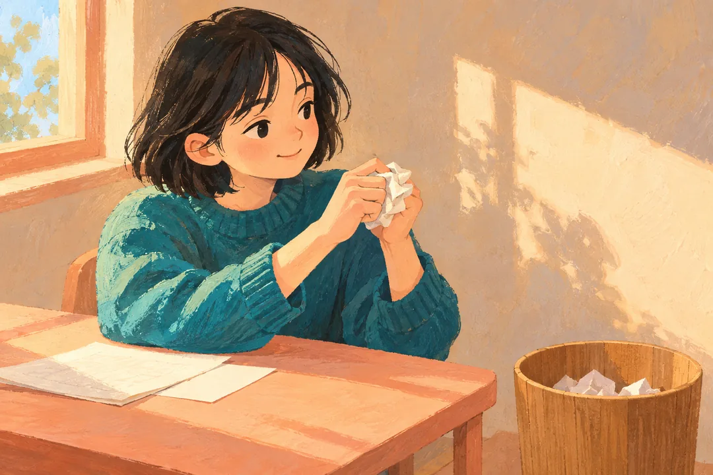
오늘 마음, 여기 두고 갈래?
걸리는 말을 짧게 적고 구겨서 화면 밖으로 보내요.
1분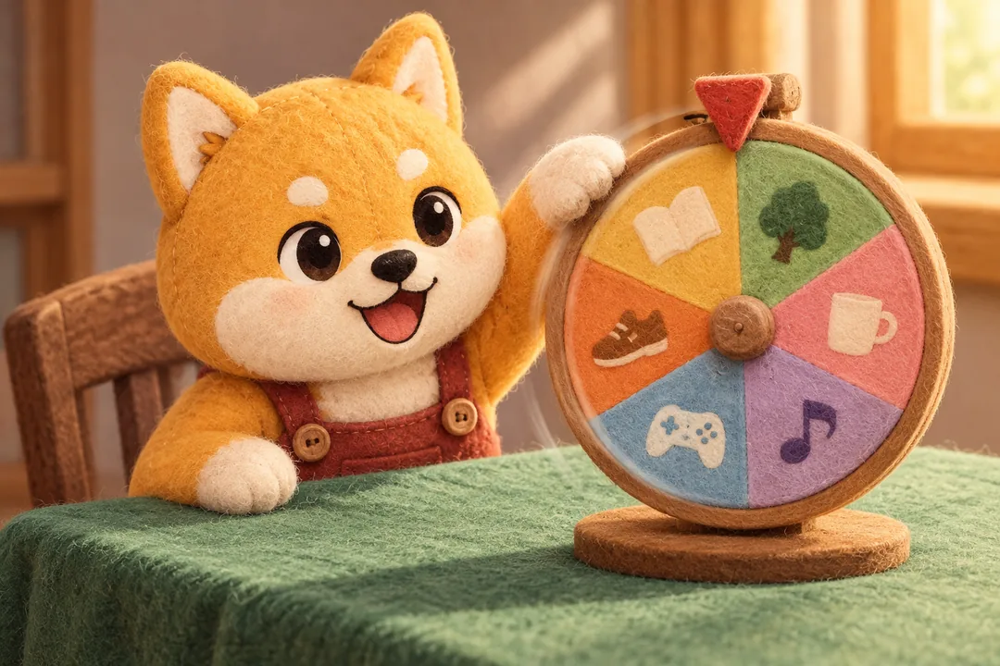
쿠쿠야, 하나만 골라줘
고민되는 선택지만 켜두면 쿠쿠가 하나를 뽑아줘요.
30초